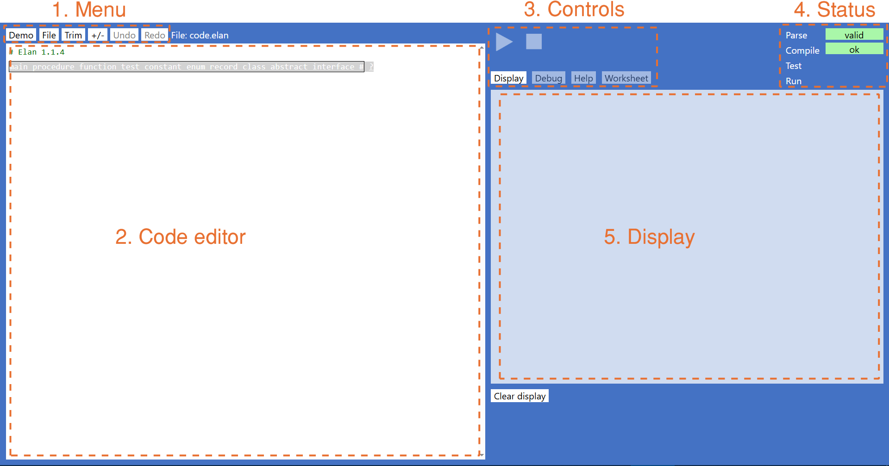
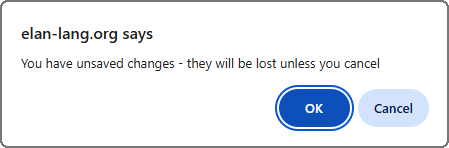
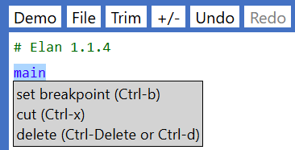
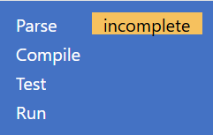
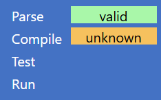
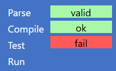
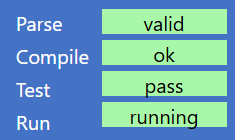

IDE means Integrated Development Environment which, for Elan, is one browser page in which code is written and tested, and in which text and graphic outputs are displayed.
It looks like this:
At the top left of the screen is the 'menu' of commands:
Some of the options shown act like a button to perform that command directly; others, when clicked will show a drop-down submenu of further commands. Individual commands may be greyed-out if unavailable. If you use the mouse to hover over any option you will usually be shown a 'tooltip' that provides a description or information about why the option is currently unavailable.
To the right of the buttons is the name of the Elan file currently loaded. When starting afresh, it is given the default name 'code.elan'.
If the Demo button is shown, clicking on it shows the list of available demo programs, which you may load by selecting the program name. You can then run the program with the Run button.
New clears the current code, allowing you to start writing a new program. The code editor will then show this:
The first line shows a standard Elan 'header' comment, which is required on every code file, and which you are not able to move, edit, or delete. The second line shows the Global prompt.
Load presents you with a file selector dialog from which you can navigate to and then load an
The name of the file that has been loaded is displayed to the right of the buttons above the code editor.
Note: you may only load a valid Elan file, i.e. one that has been created and saved by the Elan IDE. No other type of file can be loaded: trying to do so will result in a message in the Debug display:
Append, like Load, offers a file selection dialog. If you select a valid
Auto Save offers a file selection dialog to allow you to specify the name and location where your code will be saved. If you use this option, every time you modify the code and its parse status is 'valid' the code will be saved automatically, overriding the previous version in the file. Once this option has been selected, the File menu will offer a Cancel Auto Save option, after which you may use Manual Save, or re-select Auto Save.
Note that you may auto-save a New code file, even though you haven't added any instructions yet, because the file contains a valid header.
Manual Save offers a file selection dialog to allow you to specify the name and location where your code will be saved.
Unlike Auto Save, the Manual Save option is a one-off event. You must remember to save any subsequent changes if you need them saved. As a reminder, if your existing code is not saved, you will see a confirmation dialog:
Note that for both Auto Save and Manual Save, code may be saved only when its parse status is 'valid'. It may, however, then be saved even if it does not compile or pass any tests.
Save as Standalone permits a compiling program to be saved as a standalone Html file, which allows your application to be run without the Elan IDE. This file can be opened from your desktop, emailed to others, or installed on a web-server. When the file is opened in a browser:
The standalone web page includes the the program, compiled to JavaScript, and the .css for styling. The latter may be easily customised by editing the .html file directory. For example, if you wish to:
Selecting Preferences brings up a dialog, currently showing only one option (there will be more in future releases):
The Trim command is used to neaten up your code: it removes any
The keyboard shortcut for Trim is Alt-t. (This is because browsers use Ctrl-t to open a new tab).
The outlining menu command is labelled +/-. Pressing it toggles the presentation of the code between its expanded (normal) format, and an outline format, where instructions are collapsed to a single line, for example:
Any collapsed instruction may be expanded individually by double-clicking on the + sign next to it. The background colour for the + shows the status of the code that is currently hidden so that you may easily find the parts of code that contain issues.
The Undo command allows you to undo recent change(s) and go back to the last point at which the code parsed as 'valid' – you cannot go back to any state when the code was still parsing as 'incomplete' or 'invalid'. You may apply Undo repeatedly, to go back through all parse-valid states of the code since you loaded the code, or started from New. Use the Redo command to revert the last Undo if you went back too far.
The keyboard shortcut for Undo is Ctrl-z, and for Redo is Ctrl-y.
The main pane within the IDE is the 'code editor'.
When entering, editing, or just navigating (browsing) through, different sections of code will be highlighted at two different levels: whole instruction(s) or an individual field within an instruction.
The following show examples of instructions being highlighted.
Here a single instruction is highlighted:Here a container instruction is highlighted. The highlight shows the full extent of the instruction, indicating the sequence of other instructions that it contains, which are all indented by two spaces:
Instructions consist of fixed (or 'templated') code – keywords and sometimes symbols – plus a number of 'fields' which is where you enter code that define specific details for that instruction. When the field is highlighted it will be highlighted with a background colour and a thin black border. This indicates that you may now enter or edit code in that field, for example:
A green background (as above) indicates that the text in field is valid for that field. An amber background indicates that the text is not complete but that additional text could be added to make it valid. Commonly, the field will contain a prompt that suggests what else might be needed, and/or a drop-down list of 'symbols' that might be valid for the field – though it is not guaranteed that all those options will then compile:
A red background indicates that the contents of the field are not valid for that field. In the following example a variable name cannot contain a bracket:
If a field background turns red as you type, it is best to hit Backspace until it goes green or amber again, so that you can identify the first character that caused the issue.
If the background to a field is grey, it means that that field is optional – you may enter valid text or move on to the next field, or the next instruction.
At various places in the code you may see a
which indicates that new instruction(s) may be created there. When the line containing a
When a
Note that when an instruction is inserted is is followed by a
Where two or more instruction start with the same letter(s) typing the initial letter will filter the options. For example, if the initial list were:
then after typing
and the desired instruction can be selected by then typing the second character (
Note that some of the keywords in this particular prompt are presented only when the Advanced level coding option has been selected from menu File → Preferences.
The specific list offered may depends upon various factors including:
which means that you won't necessarily see all the instructions shown in this explanation. However, in general there are three
distinct forms of
The global prompt appears only at 'global' level – in other words when the
If you want to insert new instructions in a place where there is no
All prompts, include
Note for Apple Mac users: commands that use the Ctrl key in this reference should use the macOS ⌘ Command key instead.
| Keystroke | On a selected Frame | On a selected Field |
|---|---|---|
| Home | First peer-level frame. | Move text cursor to start of field. |
| End | Last peer-level frame. | Move text cursor to end of field. |
| Tab | First field in frame. | Select next field within frame or, if from last field in a frame, select the frame itself. (If the field has a selected option in the auto-complete popup list then Tab will use that option – the same as Enter) |
| ↑ | Select previous frame (within peer-level only). | Select previous frame (in tab order). |
| ↓ | Select next frame (within peer-level only). | Select next frame (in tab order). |
| ← | Select parent frame (if any). | Move text cursor left within field. |
| → | Select first child frame (if any). | Move text cursor right within field. |
| Shift- ↑ | Add previous frame (peer-level) to current selection. | If auto-complete options are offered (drop-down list), move the selection down one in the list. (See also Enter) |
| Shift- ↓ | Add next frame (peer-level) to current selection. | If auto-complete options are offered (drop-down list), move the selection up one in the list. (See also Enter) |
| Esc | Escape from the code editor, and put focus on the first Button in the IDE | |
| Ctrl-o | Toggle (expand/collapse) outlining on selected frame. | Toggle (expand/collapse) outlining on the frame enclosing this field. |
| Ctrl-O Ctrl-Shift-o | Toggle (expand/collapse) outlining on all frames. | Toggle (expand/collapse) outlining on all frames. |
| Keystroke | On a selected Frame | On a selected Field |
|---|---|---|
| Alt-t | Remove all This is equivalent to clicking on the Trim button. (This cannot be Ctrl-t as that is defined and executed by the browser). | |
| Backspace | On any On a new, unmodified, frame, or from any unedited field within that new frame: delete the whole frame and go back to the prompt. This capability is to facilitate deleting a frame created unintentionally. As soon as any field has been edited, or any child frame added – the frame can only be deleted using Ctrl-Delete (see below). | Delete character to the left of the cursor. |
| Delete | Delete the character to the right of the cursor. | |
| Ctrl-Delete or Ctrl-d | Delete the selected frame, including any frames within it. | |
| Enter | Insert a | If auto-complete options are offered (as a drop-down list), enter the selected option into the field. Otherwise, move to the next field (in the same frame) – like Tab. For last field in frame only: insert 'new code' after this field. |
| Shift-Enter | Insert a | - |
| Ctrl- ↑ | Move selected frame(s) up, within peer level. | - |
| Ctrl- ↓ | Move selected frame(s) down, within peer level. | - |
| Ctrl- ← | Move the cursor to the end of the next 'word' or other transition | |
| Ctrl- → | Move the cursor to the end of the next 'word' or other transition | |
| Ctrl-x | Cut selected frame(s) into the scratchpad | Cut any selected text from the field |
| Ctrl-v | Paste text from the clipboard into the field, at the cursor. | On a selected |
| Ctrl-b | Insert or remove a breakpoint on the frame | |
| Ctrl-i | Toggle the | |
| Ctrl-m | Open menu of help options | |
| Ctrl-p | Toggle the | |
| Ctrl-y | Redo last undo provided that the code you undid from was parsing successfully | |
| Ctrl-z | Undo last edit Takes you back to the next most recent version that parsed successfully. Any changes made that did not result in a successful parse will be lost. | |
When an instruction is highlighted, you may right-mouse-click on it, or type Ctrl-m to bring up the context menu, for example:
Note that several of the options show a keyboard shortcut – which you may use just by selecting the instruction and pressing the specified keys without having to bring up the context menu.
The top two buttons shown here are the initial 'run controls':
When the Debug button is clicked, the lower three buttons provide further run controls:
The Help button offers links to online documentation:
Each link will open in a new tab in the browser so that you don't lose your current work.
Note that the Context Menu opened on a selected instruction offers a direct link to help concerning that specific instruction.
As with the main Help menus, the documentation will open in a separate browser tab.
The Display button switches to the program's output display.
Below the pane is provided button Clear display.
The Debug button switches to debugging mode, showing the Debug, Pause and Step buttons to control debugging.
The Worksheet button opens buttons Standard worksheets and Load external worksheet to provide training materials.
The status panel shows the current status of four conditions:
Here are examples of the status display:
   Each of the four status bars may appear with a green, amber, or red background – with a superimposed word to clarify the meaning. Alternatively the bar may be replaced by the blue background, with no text, indicating that that particular status is not relevant at present.
If the Parse, Compile, or Test status shows amber or red, you can click on that status bar to highlight the first location in your code where the status shown was identified.
The chosen documentation file is shown here.
The Display button switches to the program's output pane which is blank initially, but when the program is run it shows its text and graphics output.
For example, here is the block graphics output from the demo program maze-generator.elan:

This Display pane is always rendered with an aspect ratio of 4:3 so, if the size of the browser window is changed, the pane will change its dimensions also.
The pane is used for the following purposes, on their own or in combination:
Any of the three forms of graphics may be overlaid with printed text or Html, or each other, with the one exception that Turtle graphics and Vector graphics may not be used together – as the former makes exclusive use of the latter.
The Clear display button clears all of contents of the Display pane, irrespective of the mechanism by which it was generated. However, the individual forms of display listed above may be cleared individually using specific methods (see the links above).
The Debug display pane shows only messages generated by the Elan system. They are of three forms:
If the information presented exceeds the space available for the pane, a vertical scroll bar will be shown.
The chosen worksheet is shown in the Display pane.
Elan contains some simple debugging tools. To use these tools, you need to run the program via the Debug button). Note that because of the additional overhead involved in debugging, the program may run slower than when run normally.
When debugging, a program may be paused at any point with the Pause button.
The Run status will then show as
Whenever the run status is shown as
From the paused state, you may continue execution of the program by clicking the Debug button, or you may execute just the next instruction by clicking the Single step button.
You can place a breakpoint on an instruction, by selecting the instruction and then hitting Ctrl-b, or by bringing up the Context menu and selecting set breakpoint. The breakpoint will be shown as a red flash adjacent to the instruction:
Pressing Ctrl-b on a selected instruction that already has a breakpoint will clear that breakpoint. The context menu also offers options to clear a breakpoint that has been set, or to clear all breakpoints from the program in one go.
Breakpoints are active only when running the program via the Debug button. Then,whenever a breakpoint is reached, execution will be paused, and the instruction containing the breakpoint will be highlighted with an amber background:
and the Debug pane will display the current value of each named value that is defined in the current scope.
Elan IDE Guide go to the top